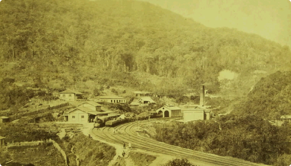

História
O distrito de Pirituba está localizado na zona norte da cidade de São Paulo. De acordo com dados históricos do site oficial da Prefeitura de São Paulo, existem duas teses para a origem do nome Pirituba: seria a combinação da palavra da tupi piri, que significa tábua, com o aumentativo, tuba, que quer dizer, muito, já que a região havia uma lagoa conhecida popularmente por Pirituba, que no idioma indígena tupi-guarani, significa vegetação de brejo. De acordo com informações históricas, existia um brejo nas redondezas, oriundo de uma das vertentes do rio Tietê que passa perto do local, por isso, a referência ao brejo ou a lagoa de Pirituba.
Influência da época de ouro do café
O surgimento de Pirituba aconteceu no século 19 em função das várias e imensas fazendas cafeeiras que cobriram totalmente a região. E, justamente, por causa da forte poder destes grandes fazendeiras na política e do peso do café no cenário nacional, foi criada uma estação para garantir a chegada dos cargas que se dirigiam porto de Santos.
O bairro de Pirituba nasceu de uma fazendo comprada pelo coronel Anástacio de Freitas, que acabou nas mãos do brigadeiro Rafael Tobias de Aguiar e da Marquesa de Santos. Por volta do ano de 1917, a propriedade foi repassada para a Companhia Armour e todo o terreno que era destinado a criação de gado foi doada à Companhia City, que tratou de dar infraestrutura ao local.
Pirituba se transforma em Polo Industrial
Hoje em dia, a região abriga um dos pontos industriais mais relevantes da cidade, com diversas companhias instaladas e repleto de residências, com elevado crescimento de construção de prédios residenciais.
Cultura em Pirituba
Pirituba conta com um dos clubes holandeses de maior prestigio de toda a cidade, a famosa Casa de Nassau, que ao longo do tempo, acabou por ser fortemente influencia pelas colônias de ingleses, italianos e russos, que chegaram para trabalhar nas indústrias locais já no começo do século 20. Além disso, a linha A da Companhia Paulista de Trens Metropolitanos (CPTM), antiga Estrada de Ferro Santos-Jundiaí passa por dentro do território do distrito.
Em Pirituba, futebol não é preferência geral
Já no cenário esportivo, Pirituba tem uma característica bem diferente do restante do país. O distrito foi um dos primeiros a contar com um time de rugby, modalidade bastante semelhante ao futebol americano, no Brasil. E ainda há em toda a região, uma grande tradição no beisebol, sendo a localidade dentro da cidade de São Paulo a possuir o maior número de praticantes não-nipônicos deste esporte.